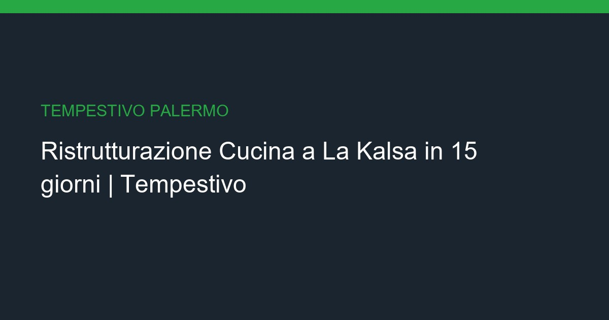

Ristrutturazione Cucina a La Kalsa: Chiavi in Mano in 15 giorni

Ristrutturazione Cucina a La Kalsa: La ristrutturazione cucina rinnova l'ambiente più vissuto della casa con impianti a norma e nuove finiture.
📌 In sintesi
- ✓ Sopralluogo gratuito entro 24/48h
- ✓ Preventivo dettagliato e trasparente
- ✓ Tempi certi contrattualizzati (15 giorni)
- ✓ Garanzia su tutti i lavori eseguiti
Caratteristiche del servizio
| Caratteristica | Dettaglio |
|---|---|
| Servizio | Ristrutturazione Cucina chiavi in mano a La Kalsa |
| Prezzo | A partire da €5000 a €12000 |
| Durata | 15 giorni |
| Zona | La Kalsa, Centro Storico, Palazzo Reale (Palermo) |
| Vincoli | Vincolo Soprintendenza Beni Culturali e Ambientali di Palermo - obbligo di progetto archeologico preventivo e conservazione elementi storici certificati |
| Materiali | Piano cottura, lavello, rivestimenti, elettrodomestici |
| Garanzia | 10 anni su impianti, 2 anni su finiture |
💶 Prezzi Dettagliati
| Voce | Prezzo |
|---|---|
| Rifacimento completo cucina | Da €5.000 |
| Nuovi impianti gas e scarichi | €1.500 - €2.500 |
| Posa rivestimenti | €25 - €45/mq |
| Montaggio mobili | Da €2.000 |
| Elettrodomestici | Da €1.500 |
Le problematiche specifiche di La Kalsa
- ✓ Vincoli stringenti della Soprintendenza Beni Culturali su qualsiasi intervento
- ✓ Scale strette e loggiate che impediscono il trasporto materiali con mezzi standard
- ✓ Conservazione obbligatoria di stucchi, maioliche storiche e pavimenti originali in cotto
- ✓ Impianti idraulici ed elettrici originali da adeguare alle normative DM 37/08
- ✓ Coordinamento complesso con amministratori di condomini storici e vicini
- ✓ Orari di cantiere limitati per non disturbare residenti e attività commerciali storiche
Nota: Operiamo tenendo conto di Vincolo Soprintendenza Beni Culturali e Ambientali di Palermo - obbligo di progetto archeologico preventivo e conservazione elementi storici certificati.
Iter Operativo per Ristrutturazione Cucina a La Kalsa
I palazzi d'epoca alla Kalsa necessitano di permessi della Soprintendenza e logistica particolare per scale strette e vicoli storici. Ristrutturare qui significa preservare stucchi, maioliche e elementi architettonici arabo-normanni unici al mondo.
Per garantire un risultato impeccabile e senza intoppi nell'area di La Kalsa, adottiamo un processo collaudato che azzera gli imprevisti e ottimizza le tempistiche:
- Sopralluogo tecnico sul posto: Un nostro responsabile si reca a La Kalsa per analizzare lo stato di fatto, rilievi metrici e verificare accessibilità e vincoli del quartiere.
- Pianificazione e Preventivo Definitivo: Invio di una proposta chiara con specifica dettagliata delle lavorazioni, materiali scelti e costi trasparenti senza sorprese finali.
- Gestione Burocratica e Permessi: Presentazione delle pratiche edilizie necessarie (CILA, SCIA o permessi della Soprintendenza ove richiesta) specifiche per la zona di La Kalsa.
- Esecuzione Lavori e Direzione Cantiere: Attuazione degli interventi con maestranze qualificate sotto la costante supervisione del nostro Project Manager dedicato.
- Collaudo, Pulizia e Consegna: Verifica finale del perfetto funzionamento di impianti e finiture, pulizia profonda dell'immobile e rilascio di garanzia ufficiale.
Materiali e Tecnologie Adottate
La nostra soluzione per Ristrutturazione Cucina
La scelta delle materie prime è fondamentale per garantire la longevità dell'intervento, specialmente in un contesto come La Kalsa. Impieghiamo esclusivamente materiali certificati, ecocompatibili e altamente resistenti all'usura e agli agenti atmosferici locali. I nostri impianti sono conformi alle normative europee di risparmio energetico e sicurezza, assicurando la massima efficienza termica e acustica per il tuo immobile.
Il nostro approccio integrato per Ristrutturazione Cucina unisce competenze di progettazione, impiantistica e finitura edile. Ascoltiamo le tue esigenze stilistiche e funzionali per realizzare una soluzione personalizzata a La Kalsa, coordinando ogni singola fase fino al completamento dell'opera nei tempi prestabiliti.
A partire da €5000 a €12000 | ⏱️ Tempi stimati: 15 giorni
Trasparenza, Sicurezza e Normative
Perché sceglierci a La Kalsa
Ogni intervento svolto a La Kalsa viene eseguito nel rigoroso rispetto delle normative vigenti in materia di sicurezza sui luoghi di lavoro e smaltimento rifiuti edili. Rilasciamo tutte le certificazioni di conformità per gli impianti realizzati, consentendoti di accedere alle detrazioni fiscali e ai bonus ristrutturazione disponibili in Sicilia per l'anno in corso.
Con oltre 500 cantieri portati a termine tra Palermo e provincia, Tempestivo rappresenta un punto di riferimento per chi cerca serietà, rispetto dei tempi e costi certi. Il nostro unico punto di contatto evita dispersioni di responsabilità, offrendo un servizio veramente completo e garantito.
Recensioni Clienti per Ristrutturazione Cucina a La Kalsa
"Prezzi onesti e lavori a regola d'arte. Hanno gestito la Soprintendenza in modo impeccabile. Ristrutturazione completa in 60 giorni." - Francesco L., Centro Storico ⭐⭐⭐⭐⭐
Domande Frequenti
"Lavori a regola d'arte e prezzi onesti. Tempestivo ha recuperato le maioliche originali del mio palazzo alla Kalsa. Professionalità rara!" - Anna M., La Kalsa ⭐⭐⭐⭐⭐
Quanto tempo serve per ottenere i permessi della Soprintendenza alla Kalsa?
I tempi medi sono di 60-90 giorni. Noi presentiamo la documentazione con mesi di anticipo e seguiamo l'iter personalmente, riducendo i tempi di attesa del 30% rispetto alla media.
Potete recuperare maioliche e stucchi originali?
Sì, collaboriamo con restauratori certificati dalla Soprintendenza per il recupero di maioliche storiche, stucchi decorativi e pavimenti in cotto. Ogni intervento è documentato fotograficamente.
Come gestite il trasporto materiali nei vicoli stretti della Kalsa?
Utilizziamo mezzi compatti elettrici e sistemi di sollevamento specifici per palazzi storici. Proteggiamo tutte le aree comuni e rispettiamo gli orari condominiali per zero conflitti.
Servizi Correlati
- → Ristrutturazione Bagno a Kalsa
- → Ristrutturazione Completa a Kalsa
- → Imbiancatura a Kalsa
- → Elettricista e Impianti Elettrici a Kalsa
- → Idraulico e Impianti Idrici a Kalsa
- → Impianti di Condizionamento a Kalsa
- → Ristrutturazione Cucina a Mondello
- → Ristrutturazione Cucina a ZEN
- → Ristrutturazione Cucina a Politeama
- → Bonus Ristrutturazioni Sicilia
- → Guida Ristrutturazione Bagno
- → Servizi_Palermo